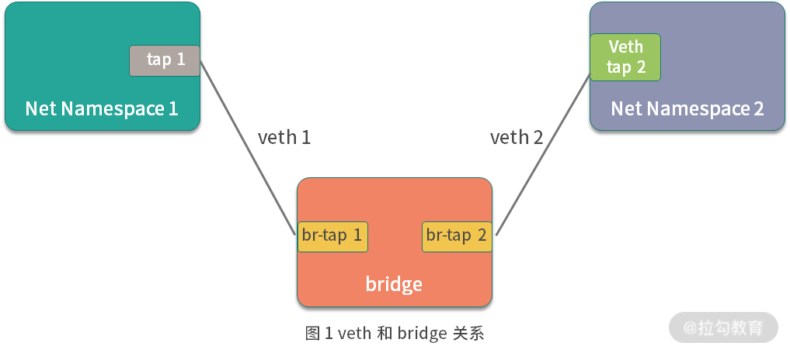
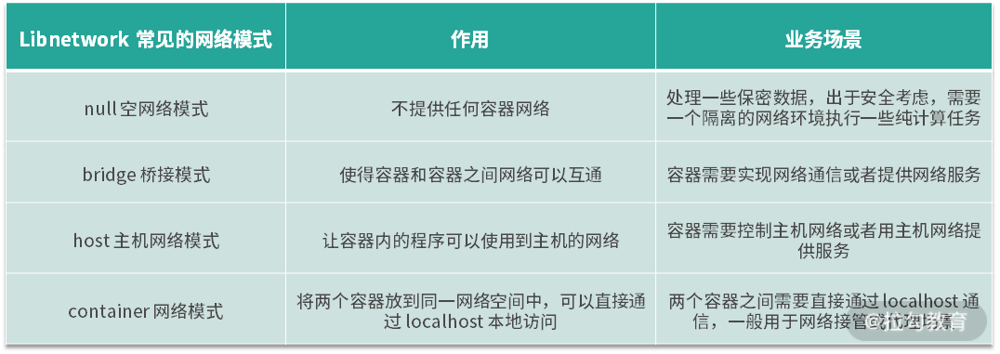

- 00 溯本求源，吃透 Docker！.md.html
- 01 Docker 安装：入门案例带你了解容器技术原理.md.html
- 02 核心概念：镜像、容器、仓库，彻底掌握 Docker 架构核心设计理念.md.html
- 03 镜像使用：Docker 环境下如何配置你的镜像？.md.html
- 04 容器操作：得心应手掌握 Docker 容器基本操作.md.html
- 05 仓库访问：怎样搭建属于你的私有仓库？.md.html
- 06 最佳实践：如何在生产中编写最优 Dockerfile？.md.html
- 07 Docker 安全：基于内核的弱隔离系统如何保障安全性？.md.html
- 08 容器监控：容器监控原理及 cAdvisor 的安装与使用.md.html
- 09 资源隔离：为什么构建容器需要 Namespace ？.md.html
- 10 资源限制：如何通过 Cgroups 机制实现资源限制？.md.html
- 11 组件组成：剖析 Docker 组件作用及其底层工作原理.md.html
- 12 网络模型：剖析 Docker 网络实现及 Libnetwork 底层原理.md.html
- 13 数据存储：剖析 Docker 卷与持久化数据存储的底层原理.md.html
- 14 文件存储驱动：AUFS 文件系统原理及生产环境的最佳配置.md.html
- 15 文件存储驱动：Devicemapper 文件系统原理及生产环境的最佳配置.md.html
- 16 文件存储驱动：OverlayFS 文件系统原理及生产环境的最佳配置.md.html
- 17 原理实践：自己动手使用 Golang 开发 Docker（上）.md.html
- 18 原理实践：自己动手使用 Golang 开发 Docker（下）.md.html
- 19 如何使用 Docker Compose 解决开发环境的依赖？.md.html
- 20 如何在生产环境中使用 Docker Swarm 调度容器？.md.html
- 21 如何使 Docker 和 Kubernetes 结合发挥容器的最大价值？.md.html
- 22 多阶级构建：Docker 下如何实现镜像多阶级构建？.md.html
- 23 DevOps：容器化后如何通过 DevOps 提高协作效能？.md.html
- 24 CICD：容器化后如何实现持续集成与交付？（上）.md.html
- 25 CICD：容器化后如何实现持续集成与交付？（下）.md.html
- 26 结束语 展望未来：Docker 的称霸之路.md.html
12 网络模型：剖析 Docker 网络实现及 Libnetwork 底层原理
前几课时，我介绍了 Linux 的 Namespace 和 Cgroups 技术，利用这两项技术可以实现各种资源的隔离和主机资源的限制，让我们的容器可以像一台虚拟机一样。但这时我们的容器就像一台未联网的电脑，不能被外部访问到，也不能主动与外部通信，这样的容器只能做一些离线的处理任务，无法通过外部访问。所以今天这一讲，我将介绍 Docker 网络相关的知识，使 Docker 容器接通网络。
容器网络发展史
提起 Docker 网络，我们不得不从容器战争说起。Docker 从 2013 年诞生，到后来逐渐成为了容器的代名词，然而 Docker 的野心也不止于此，它还想在更多的领域独占鳌头，比如制定容器的网络和存储标准。
于是 Docker 从 1.7 版本开始，便把网络和存储从 Docker 中正式以插件的形式剥离开来，并且分别为其定义了标准，Docker 定义的网络模型标准称之为 CNM (Container Network Model) 。
Docker 推出 CNM 的同时，CoreOS 推出了 CNI（Container Network Model）。起初，以 Kubernetes 为代表的容器编排阵营考虑过使用 CNM 作为容器的网络标准，但是后来由于很多技术和非技术原因（如果你对详细原因感兴趣，可以参考这篇博客），Kubernetes 决定支持 CoreOS 推出的容器网络标准 CNI。
从此，容器的网络标准便分为两大阵营，一个是以 Docker 公司为代表的 CNM，另一个便是以 Google、Kubernetes、CoreOS 为代表的 CNI 网络标准。
CNM
CNM (Container Network Model) 是 Docker 发布的容器网络标准，意在规范和指定容器网络发展标准，CNM 抽象了容器的网络接口 ，使得只要满足 CNM 接口的网络方案都可以接入到 Docker 容器网络，更好地满足了用户网络模型多样化的需求。
CNM 只是定义了网络标准，对于底层的具体实现并不太关心，这样便解耦了容器和网络，使得容器的网络模型更加灵活。
CNM 定义的网络标准包含三个重要元素。
- 沙箱（Sandbox）：沙箱代表了一系列网络堆栈的配置，其中包含路由信息、网络接口等网络资源的管理，沙箱的实现通常是 Linux 的 Net Namespace，但也可以通过其他技术来实现，比如 FreeBSD jail 等。
- 接入点（Endpoint）：接入点将沙箱连接到网络中，代表容器的网络接口，接入点的实现通常是 Linux 的 veth 设备对。
- 网络（Network）：网络是一组可以互相通信的接入点，它将多接入点组成一个子网，并且多个接入点之间可以相互通信。
CNM 的三个要素基本抽象了所有网络模型，使得网络模型的开发更加规范。
为了更好地构建容器网络标准，Docker 团队把网络功能从 Docker 中剥离出来，成为独立的项目 libnetwork，它通过插件的形式为 Docker 提供网络功能。Libnetwork 是开源的，使用 Golang 编写，它完全遵循 CNM 网络规范，是 CNM 的官方实现。Libnetwork 的工作流程也是完全围绕 CNM 的三个要素进行的，下面我们来详细了解一下 Libnetwork 是如何围绕 CNM 的三要素工作的。
Libnetwork 的工作流程
Libnetwork 是 Docker 启动容器时，用来为 Docker 容器提供网络接入功能的插件，它可以让 Docker 容器顺利接入网络，实现主机和容器网络的互通。下面，我们来详细了解一下 Libnetwork 是如何为 Docker 容器提供网络的。
第一步：Docker 通过调用 libnetwork.New 函数来创建 NetworkController 实例。NetworkController 是一个接口类型，提供了各种接口，代码如下：
type NetworkController interface {
// 创建一个新的网络。 options 参数用于指定特性类型的网络选项。
NewNetwork(networkType, name string, id string, options ...NetworkOption) (Network, error)
// ... 此次省略部分接口
}
第二步：通过调用 NewNetwork 函数创建指定名称和类型的 Network，其中 Network 也是接口类型，代码如下:
type Network interface {
// 为该网络创建一个具有唯一指定名称的接入点（Endpoint）
CreateEndpoint(name string, options ...EndpointOption) (Endpoint, error)
// 删除网络
Delete() error
// ... 此次省略部分接口
}
第三步：通过调用 CreateEndpoint 来创建接入点（Endpoint）。在 CreateEndpoint 函数中为容器分配了 IP 和网卡接口。其中 Endpoint 也是接口类型，代码如下：
// Endpoint 表示网络和沙箱之间的逻辑连接。
type Endpoint interface {
// 将沙箱连接到接入点，并将为接入点分配的网络资源填充到沙箱中。
// the network resources allocated for the endpoint.
Join(sandbox Sandbox, options ...EndpointOption) error
// 删除接入点
Delete(force bool) error
// ... 此次省略部分接口
}
第四步：调用 NewSandbox 来创建容器沙箱，主要是初始化 Namespace 相关的资源。
第五步：调用 Endpoint 的 Join 函数将沙箱和网络接入点关联起来，此时容器就加入了 Docker 网络并具备了网络访问能力。
Libnetwork 基于以上工作流程可以构建出多种网络模式，以满足我们的在不同场景下的需求，下面我们来详细了解一下 Libnetwork 提供的常见的四种网络模式。
Libnetwork 常见网络模式
Libnetwork 比较典型的网络模式主要有四种，这四种网络模式基本满足了我们单机容器的所有场景。
- null 空网络模式：可以帮助我们构建一个没有网络接入的容器环境，以保障数据安全。
- bridge 桥接模式：可以打通容器与容器间网络通信的需求。
- host 主机网络模式：可以让容器内的进程共享主机网络，从而监听或修改主机网络。
- container 网络模式：可以将两个容器放在同一个网络命名空间内，让两个业务通过 localhost 即可实现访问。
下面我们对 libnetwork 的四种网络模式逐一讲解：
（1）null 空网络模式
有时候，我们需要处理一些保密数据，出于安全考虑，我们需要一个隔离的网络环境执行一些纯计算任务。这时候 null 网络模式就派上用场了，这时候我们的容器就像一个没有联网的电脑，处于一个相对较安全的环境，确保我们的数据不被他人从网络窃取。
使用 Docker 创建 null 空网络模式的容器时，容器拥有自己独立的 Net Namespace，但是此时的容器并没有任何网络配置。在这种模式下，Docker 除了为容器创建了 Net Namespace 外，没有创建任何网卡接口、IP 地址、路由等网络配置。我们可以一起来验证下。
我们使用 docker run 命令启动时，添加 --net=none 参数启动一个空网络模式的容器，命令如下：
$ docker run --net=none -it busybox
/ #
容器启动后，我们使用 ifconfig 命令查看一下容器内网络配置信息：
/ # ifconfig
lo Link encap:Local Loopback
inet addr:127.0.0.1 Mask:255.0.0.0
UP LOOPBACK RUNNING MTU:65536 Metric:1
RX packets:0 errors:0 dropped:0 overruns:0 frame:0
TX packets:0 errors:0 dropped:0 overruns:0 carrier:0
collisions:0 txqueuelen:1000
RX bytes:0 (0.0 B) TX bytes:0 (0.0 B)
可以看到容器内除了 Net Namespace 自带的 lo 网卡并没有创建任何虚拟网卡，然后我们再使用 route -n 命令查看一下容器内的路由信息:
/ # route -n
Kernel IP routing table
Destination Gateway Genmask Flags Metric Ref Use Iface
可以看到，容器内也并没有配置任何路由信息。
（2）bridge 桥接模式
Docker 的 bridge 网络是启动容器时默认的网络模式，使用 bridge 网络可以实现容器与容器的互通，可以从一个容器直接通过容器 IP 访问到另外一个容器。同时使用 bridge 网络可以实现主机与容器的互通，我们在容器内启动的业务，可以从主机直接请求。
在介绍 Docker 的 bridge 桥接模式前，我们需要先了解一下 Linux 的 veth 和 bridge 相关的技术，因为 Docker 的 bridge 模式正是由这两种技术实现的。
- Linux veth
veth 是 Linux 中的虚拟设备接口，veth 都是成对出现的，它在容器中，通常充当一个桥梁。veth 可以用来连接虚拟网络设备，例如 veth 可以用来连通两个 Net Namespace，从而使得两个 Net Namespace 之间可以互相访问。
- Linux bridge
Linux bridge 是一个虚拟设备，是用来连接网络的设备，相当于物理网络环境中的交换机。Linux bridge 可以用来转发两个 Net Namespace 内的流量。
- veth 与 bridge 的关系

通过图 1 ，我们可以看到，bridge 就像一台交换机，而 veth 就像一根网线，通过交换机和网线可以把两个不同 Net Namespace 的容器连通，使得它们可以互相通信。
Docker 的 bridge 模式也是这种原理。Docker 启动时，libnetwork 会在主机上创建 docker0 网桥，docker0 网桥就相当于图 1 中的交换机，而 Docker 创建出的 brige 模式的容器则都会连接 docker0 上，从而实现网络互通。
bridge 桥接模式是 Docker 的默认网络模式，当我们创建容器时不指定任何网络模式，Docker 启动容器默认的网络模式为 bridge。
（3）host 主机网络模式
容器内的网络并不是希望永远跟主机是隔离的，有些基础业务需要创建或更新主机的网络配置，我们的程序必须以主机网络模式运行才能够修改主机网络，这时候就需要用到 Docker 的 host 主机网络模式。
使用 host 主机网络模式时：
- libnetwork 不会为容器创建新的网络配置和 Net Namespace。
- Docker 容器中的进程直接共享主机的网络配置，可以直接使用主机的网络信息，此时，在容器内监听的端口，也将直接占用到主机的端口。
- 除了网络共享主机的网络外，其他的包括进程、文件系统、主机名等都是与主机隔离的。
host 主机网络模式通常适用于想要使用主机网络，但又不想把运行环境直接安装到主机上的场景中。例如我想在主机上运行一个 busybox 服务，但又不想直接把 busybox 安装到主机上污染主机环境，此时我可以使用以下命令启动一个主机网络模式的 busybox 镜像：
$ docker run -it --net=host busybox
/ #
然后我们使用ip a 命令查看一下容器内的网络环境：
/ # ip a
1: lo: <LOOPBACK,UP,LOWER\_UP> mtu 65536 qdisc noqueue qlen 1000
link/loopback 00:00:00:00:00:00 brd 00:00:00:00:00:00
inet 127.0.0.1/8 scope host lo
valid\_lft forever preferred\_lft forever
inet6 ::1/128 scope host
valid\_lft forever preferred\_lft forever
2: eth0: <BROADCAST,MULTICAST,UP,LOWER\_UP> mtu 1500 qdisc pfifo\_fast qlen 1000
link/ether 02:11:b0:14:01:0c brd ff:ff:ff:ff:ff:ff
inet 172.20.1.11/24 brd 172.20.1.255 scope global dynamic eth0
valid\_lft 85785286sec preferred\_lft 85785286sec
inet6 fe80::11:b0ff:fe14:10c/64 scope link
valid\_lft forever preferred\_lft forever
3: docker0: \<NO-CARRIER,BROADCAST,MULTICAST,UP> mtu 1500 qdisc noqueue
link/ether 02:42:82:8d:a0:df brd ff:ff:ff:ff:ff:ff
inet 172.17.0.1/16 scope global docker0
valid\_lft forever preferred\_lft forever
inet6 fe80::42:82ff:fe8d:a0df/64 scope link
valid\_lft forever preferred\_lft forever
可以看到容器内的网络环境与主机完全一致。
（4）container 网络模式
container 网络模式允许一个容器共享另一个容器的网络命名空间。当两个容器需要共享网络，但其他资源仍然需要隔离时就可以使用 container 网络模式，例如我们开发了一个 http 服务，但又想使用 nginx 的一些特性，让 nginx 代理外部的请求然后转发给自己的业务，这时我们使用 container 网络模式将自己开发的服务和 nginx 服务部署到同一个网络命名空间中。
下面我举例说明。首先我们使用以下命令启动一个 busybox1 容器：
$ docker run -d --name=busybox1 busybox sleep 3600
然后我们使用 docker exec 命令进入到 centos 容器中查看一下网络配置：
$ docker exec -it busybox1 sh
/ # ifconfig
eth0 Link encap:Ethernet HWaddr 02:42:AC:11:00:02
inet addr:172.17.0.2 Bcast:172.17.255.255 Mask:255.255.0.0
UP BROADCAST RUNNING MULTICAST MTU:1500 Metric:1
RX packets:11 errors:0 dropped:0 overruns:0 frame:0
TX packets:0 errors:0 dropped:0 overruns:0 carrier:0
collisions:0 txqueuelen:0
RX bytes:906 (906.0 B) TX bytes:0 (0.0 B)
lo Link encap:Local Loopback
inet addr:127.0.0.1 Mask:255.0.0.0
UP LOOPBACK RUNNING MTU:65536 Metric:1
RX packets:0 errors:0 dropped:0 overruns:0 frame:0
TX packets:0 errors:0 dropped:0 overruns:0 carrier:0
collisions:0 txqueuelen:1000
RX bytes:0 (0.0 B) TX bytes:0 (0.0 B)
可以看到 busybox1 的 IP 地址为 172.17.0.2。
然后我们新打开一个命令行窗口，再启动一个 busybox2 容器，通过 container 网络模式连接到 busybox1 的网络，命令如下：
$ docker run -it --net=container:busybox1 --name=busybox2 busybox sh
/ #
在 busybox2 容器内同样使用 ifconfig 命令查看一下容器内的网络配置：
/ # ifconfig
eth0 Link encap:Ethernet HWaddr 02:42:AC:11:00:02
inet addr:172.17.0.2 Bcast:172.17.255.255 Mask:255.255.0.0
UP BROADCAST RUNNING MULTICAST MTU:1500 Metric:1
RX packets:14 errors:0 dropped:0 overruns:0 frame:0
TX packets:0 errors:0 dropped:0 overruns:0 carrier:0
collisions:0 txqueuelen:0
RX bytes:1116 (1.0 KiB) TX bytes:0 (0.0 B)
lo Link encap:Local Loopback
inet addr:127.0.0.1 Mask:255.0.0.0
UP LOOPBACK RUNNING MTU:65536 Metric:1
RX packets:0 errors:0 dropped:0 overruns:0 frame:0
TX packets:0 errors:0 dropped:0 overruns:0 carrier:0
collisions:0 txqueuelen:1000
RX bytes:0 (0.0 B) TX bytes:0 (0.0 B)
可以看到 busybox2 容器的网络 IP 也为 172.17.0.2，与 busybox1 的网络一致。
以上就是 Libnetwork 常见的四种网络模式，它们的作用及业务场景帮你总结如下：

结语
我上面有说到 Libnetwork 的工作流程是完全围绕 CNM 的三个要素进行的，CNM 制定标准之初不仅仅是为了单台主机上的容器互通，更多的是为了定义跨主机之间的容器通信标准。但是后来由于 Kubernetes 逐渐成为了容器编排的标准，而 Kubernetes 最终选择了 CNI 作为容器网络的定义标准（具体原因可以参考这里），很遗憾 CNM 最终没有成为跨主机容器通信的标准，但是CNM 却为推动容器网络标准做出了重大贡献，且 Libnetwork 也是 Docker 的默认网络实现，提供了单独使用 Docker 容器时的多种网络接入功能。